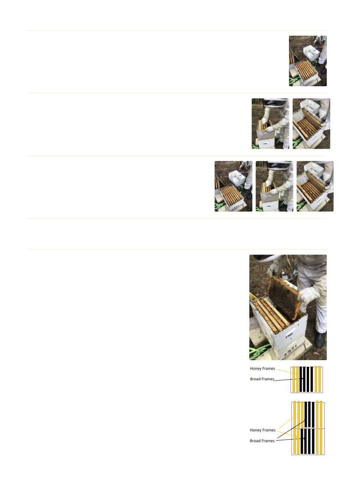

7
Remove the empty super and view the next super (or brood box if no other supers)
‐ again look into the top of the box and count the frames of bees. This will depend
on how far you can pack the bees down.
8
Start removing the frames as you did in Step 6 ‐ separating the
frames ‐ brood in one box, honey frames in another box and the
empty frames in another box.
9
Continue steps 5 to 8 until you have inspected all the
supers and brood box.
10
Now count up your frames to estimate the total number of frames of bees. This is a guide to the
number of honey frames required. Try and have 1 brood frame to 1 capped honey frame.
11
Start replacing the frames. If you are packing down to one super ‐
positions 1 & 8 are usually for honey frames, then from position 7
to 2. Try and have the honey frames on the outside and the brood
frames in the middle. If you are packing down to 2 supers ‐ the
main preference is to have the majority of the brood frames in the
bottom super. Say 5 in the bottom and 3 in the second super, al‐
ways in the centre. Also ensure there is space for the queen to lay.
Do not put frames with a lot of nectar as this may ferment over the
cooler months and cause nosema or other issues. If you are packing
down to 2 supers it is a good idea to remove the queen excluder to
allow the queen to roam between both boxes.
Geelong Beekeepers Club ∙ General Beekeeping
43